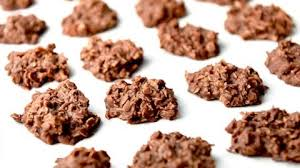

Coconut Nobake Cookies
Back to main page

Cook time = prep + 1 minute at boil
Need: medium pot, cookie sheet, and parchment paper
Ingredients
- 3 cups oatmeal
- 1 cup coconut
- 2 Tbsp cocoa
- 1/2 cup milk
- 1 stick of butter
- 2 cups sugar
- 1 square baking chocolate
Steps
- Mix dry ingredients.
- Add wet ingredients to a medium pot. Mix and then add dry ingredients. Bring to a boil.
- Let boil for 1 minute.
- Remove from heat and place cookie sized dollups onto parchment lined cookie sheet.
- Let cool.